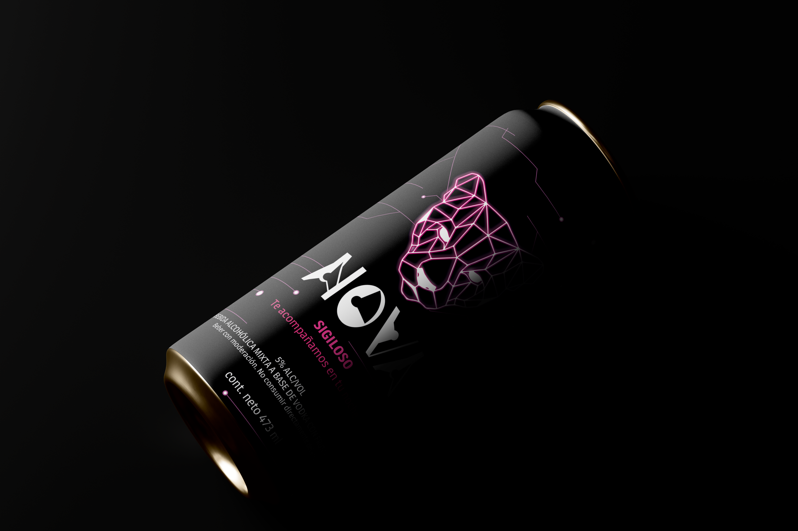
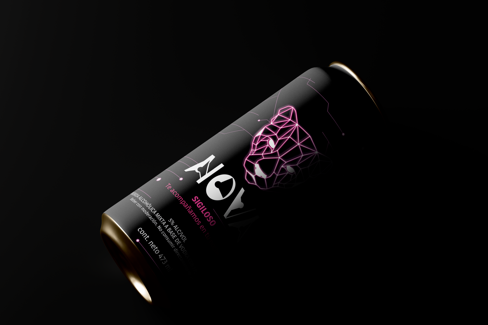

✿ Proyectos Destacados ✿
Sistema de latas
Identidad latas de vodka
El proyecto consistió en crear una tipográfica a través de un objeto en este caso el pie de un velador, donde se formo la palabra y luego se crea la identidad de “NOVA”


 
